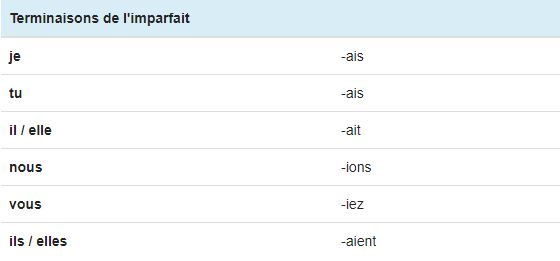

L'Imparfait de l'indicatif
Utilisation
L'imparfait situe l'action exprimée par le verbe dans le passé, sauf dans le cas de la concordance des temps. On l'utilise dans les cas suivants:
- Emploi en tant que temps du passé: l'imparfait présente l'action dans son déroulement, en cours d'accomplissement ou répétée durant un moment du passé. "Avant, je faisais beaucoup de sport". Parler d'un événement à l'imparfait, c'est placer cet événement à l'arrière-plan.
- Emploi sans référence au passé: "Je venais vous demander un petit service", "si j'étais riche"
- Emploi narratif: l'imparfait est parfois employé dans la littérature à la place des temps de narration habituels tels que le passé simple ou le présent. "Quelques instants plus tard, il descendait l’escalier, traversait le salon aux meubles disparates, gagnait la terrasse."
Terminaisons
Les terminaisons de l'imparfait de l'indicatif sont les mêmes pour tous les verbes de tous les groupes: ais, ais, ait, ions, iez, aient. A noter qu'il est possible d'obtenir deux i consécutifs avec ces terminaisons lors de la conjugaison à l'imparfait: "nous priions", "vous priiez".

Auxiliaires
Voici la conjugaison des deux auxiliaires avoir et être à l'imparfait de l'indicatif. Ces deux auxiliaires à l'imparfait permettent notamment de construire le plus que parfait de l'indicatif.


Premiers exercices
Exercices à faire au maximum sans l'aide de la leçon.
Conjugez le verbe attendu, à la personne attendue, à l'imparfait. Ne pas écrire le pronom et ne pas mettre de majuscule !
Si tu as réussis pour ces verbes là, je te conseille de cliquer ici pour t'entraîner sur des verbes et des pronoms aléatoires: Exercice final de l'imparfait